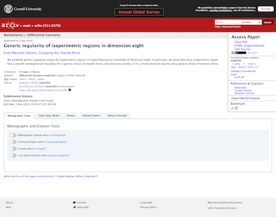

Written for the board and leadership: where arXiv sits in the research-publishing field, what the brand looks like on the page, and how its success might be measured. The brand statement and the design principles are on Brand & vision.
arXiv was built in 1991 to break the hold commercial publishing had on science, and thirty-five years later it is still free, still run for researchers, and still the place physics, mathematics and computer science go first.
Two audits measured arXiv against the research-publishing ecosystem — eighteen platforms for brand colour, nineteen article pages for what those pages actually do to a reader. The conclusions, in brief.
12 of 18 platforms use a dark blue as their primary brand colour, and eight of those twelve sit in a band so narrow that Springer Nature, IEEE and Taylor & Francis are separated more by lightness than by hue.
arXiv takes the same hue and goes light: Open Blue is thirty points lighter than the lightest platform in the field, and paired with a warm near-black where everyone else pairs with black.
0 advertising or tracking networks on an arXiv paper page. Only arXiv and the two overlay journals can say that. Every commercial platform measured loads between eleven and thirty-eight third-party domains.
IEEE sets twenty-eight cookies on an article body it will not show without a subscription. Springer runs ten tracking networks on a page that costs USD 39.95 to read.
108px from the top of the page to the paper title on arXiv — the highest of any platform measured. The field average is nearly three times that, and one platform pushes the title beyond 600px.
A first-time visitor to arXiv is contacted by two outside domains, both code libraries, and given one cookie.
Full research: competitor brand colour audit · clicks-to-content audit
The abstract page on the left is what arXiv serves today. On the right is the Phase 1 proposal, which merges the abstract and the full paper into one page. The right-hand panel is the live mockup, not a screenshot, so it stays current as the work does.

Today — the abstract page. The reader reaches the paper itself in one more click.
Proposed — abstract and full paper on one page. Open the full mockup
Each change below is there because a brand principle asked for it, not because it looked better.
| Change | What it does for the reader |
|---|---|
| The paper is on the page | Today the abstract page sends the reader to a separate address for the full text. Nearly every
open-access platform measured already serves the paper on arrival; arXiv is the exception. The merged page
removes that step.
Principle: the interface gets out of the way. |
| One click to cite | Copying a citation today means opening a panel and selecting the text by hand. The proposal puts a copy
button next to the citation. No platform measured does better.
Principle: speed and efficiency are different promises. |
| Still no advertising, still no tracking | The redesign adds no advertising surface, no engagement metrics, no view counts, and no third-party
tracking. This is the part of the brand that is easiest to lose by accident and hardest to win back.
Principle: no metrics, no gamification, no dark patterns. |
| Structure a machine can read | The current abstract page has seven top-level headings where there should be one, which is the worst
heading structure in the sample. The proposal has one, with real landmarks underneath it — better for screen
readers, and better for every tool that reads arXiv rather than browses it.
Principle: readable by people and machines, equally. |
| Light where the field is dark | Open Blue and a warm near-black, against a field of corporate navy. The visual lightness is the
positioning, not a decoration on top of it.
Principle: lighter than the establishment. |
One honest note: the proposal currently places the paper title lower on the page than the abstract page does, because it includes a prominent link back to the abstract while both pages exist. If the merged page becomes the default, that link retires and the title sits higher than on any platform measured, arXiv included.
Open question, deliberately. Beyond uptime, arXiv has never defined internal benchmarks for success. That is a side effect of not needing the numbers most organisations are built around, and it is a good early question for new leadership rather than one to answer in advance.
The thinking so far — including why the usual metrics of acquisition, retention and engagement are the wrong ones here, and a first set of proxies tied to promises rather than behaviour — is in the brand metrics brainstorm.